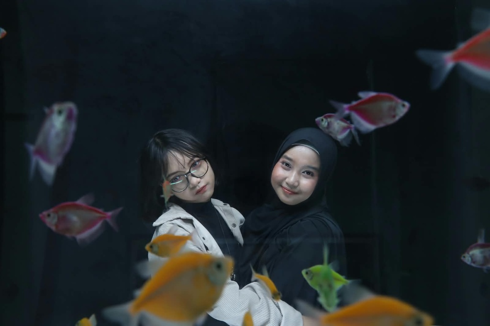

Timeline of Us
From Then To Now
Garis waktu perjalanan dua orang anak kecil yang memutuskan untuk saling menggenggam tangan melewati setiap babak kehidupan.
❧ ❧
CHAPTER 01
The Beginning • SD & Pesantren
“Kamu Duduk Sama Siapa, Ris?”
Kelas 2 SD — Kelas 6 SD
Masih ingat waktu aku baru pindah sekolah saat kelas 2 SD? Aku duduk di sebelah sepupumu, lalu kamu sesekali datang mampir ke meja kami sambil bertanya kalimat itu. Dari kelas 3 SD kita makin dekat apalagi setelah masuk pesantren bareng. Sampai kelas 6, setiap ada foto bersama posisi kita selalu berdampingan.
✦ Momen kunci: Berawal dari anak baru pindah sekolah dan mampir ke meja kelas, berlanjut jadi teman seumur hidup.
CHAPTER 02
Growing Up • Era SMP & Konten COVID
Jedag-Jedug & Video Transisi Absurd
Masa SMP & Masa Karantina
Masa SMP saat pandemi COVID jadi masa paling random! Kita sering banget bikin video bareng, mulai dari jedag-jedug sampai berbagai macam video transisi yang waktu itu rasanya keren banget. Walau sekarang kalau dilihat lagi bikin cringe sendiri, tapi selalu ada saja ide untuk bikin video berdua dan tertawa lepas.
✦ Momen kunci: Nggak peduli konsepnya apa, yang penting bisa seru-seruan dan bikin video berdua.
CHAPTER 03
The Memories • Masa SMA & Cerita Kelas
Tidur di Kelas, Catatan Lambat, & Saling Nyuapin
Putih Abu-Abu & Bangku Kelas
Masa SMA yang penuh kenangan absurd: duduk sebangku dan kadang tidur bareng di kelas, kamu yang hobi ngemil pas guru nerangin (terutama jam pelajaran agama!), dan kamu yang gak sabaran lihat aku makan kelamaan sampai akhirnya nyuapin sendiri. Padahal kamu punya bakat menulis cerita dan AU Twitter yang puitis, tapi kalau urusan mencatat materi di kelas selalu satu huruf demi satu huruf!
✦ Momen kunci: Dari drama catatan kelas sampai kebiasaan saling menjahili yang bikin masa sekolah begitu berkesan.
CHAPTER 04
Today & Beyond • Hari Ini & Masa Depan
Dunia Berbeda, Satu Cerita Berdampingan
Hari Ulang Tahunmu & Seterusnya
Dari dulu selera kita berbeda: anime vs drama Thailand, BL, dan NCT. Sekarang selera musik pun punya dunia masing-masing: Nadin Amizah vs Hindia. Dari kamu yang dulu tergila-gila cowok virtual hingga akhirnya menemukan cinta di dunia nyata, dan dari yang dulu nggak ngopi sekarang jadi suka ngopi. Dunia boleh berbeda, tapi cerita kita tetap melangkah bersama.
✦ Momen kunci: “Different songs, countless memories, one little story.” Selamat ulang tahun sahabat kecilku!
“Time flies, seasons change, people come and go. But I'm blessed that you stayed.”